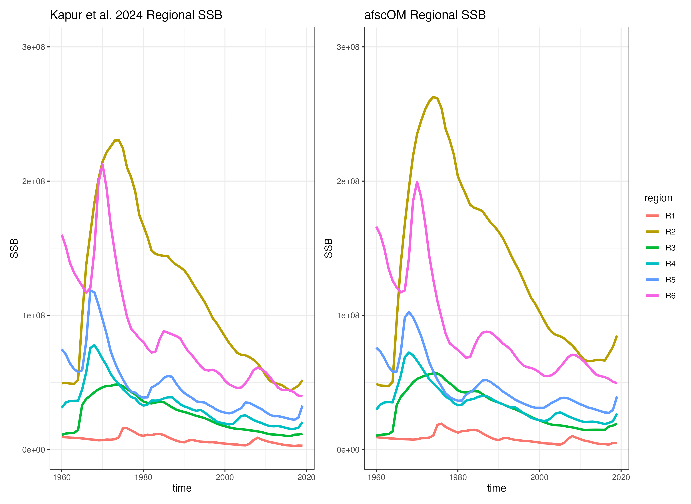
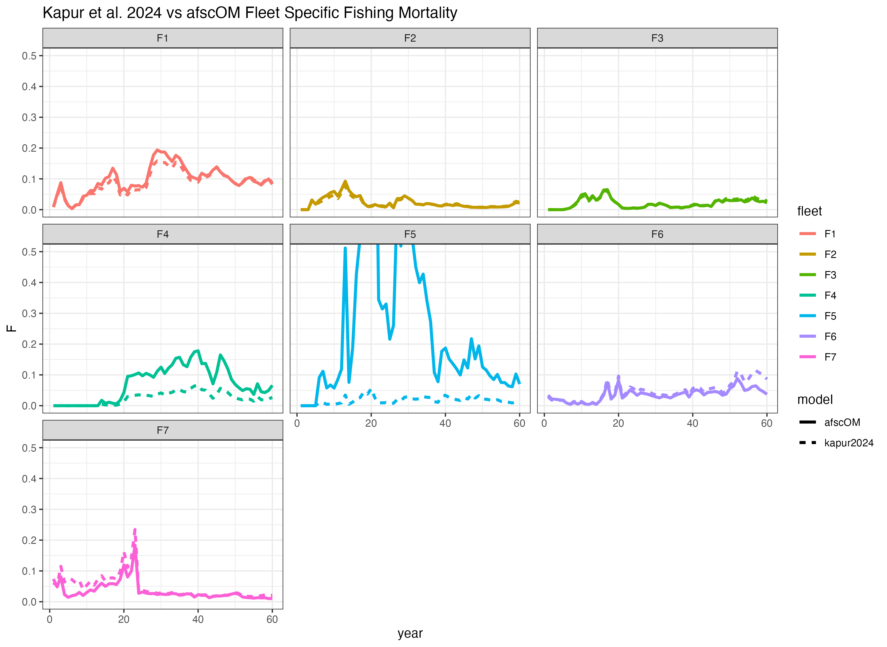

nep_transboundary_sablefish.RmdHere we describe an implementation of the custom management strategy evaluation model built for the transboundary Northeast Pacific sablefish stock (Kapur 2023, Kapur et al. 2024) using the afscOM framework. The original model is a spatially-explicit, multi-stock, age- and sex-structured population model that spans the Northeast Pacific Ocean, from the U.S. - Mexico border to the Bering Sea and Aleutian Islands, and accounts for fishing by seven distinct fishing fleets across six spatial regions spanning three management regimes. For a full description of the original model, see Kapur et al. (2023) and Kapur et al. (2024).
The transboundary sablefish model represents a useful case study for the afscOM package as it includes multiple unique “stocks” that share demographic rates, but can span across spatial units, as well as multiple fisheries that are active in only a subset of the spatial regions. As such, the original transboundary sablefish model is able to produce complex population dynamics that make use of a wide variety of the features implemented by afscOM.
The level of complexity of the original model implementation is not fully reproducible by afscOM at current (July 2024). Major discrepencies include the afscOM treatement of growth (via weight-at-age), the original model’s use of sub-annual “seasonal” timesteps and the associated timing of natural morality, fishing mortality, movement, and recruitment processes, and the allocation of catch across fleets and regions. It is also notable that the original model utilized a different algorithm to solve for the fishing mortality that would yield a specific annual catch (Pope’s approximation) than what is implemented within afscOM (Baranov catch equation).
Fleet and region names have been anonymized here.
afscOM
The full implementation of the transboundary sablefish model is quite similar to the process described in the “Simple Spatial OM Example”, though determination of the proper spatial and spatial-fleet catch apportionment was complicated. For more details on specifying a generic spatial OM using afscOM please see the “Simple Spatial OM Example”.
Despite some simplifications with regards to the treatment of seasonal event timing, growth, and small discrepencies in the exact region-fleet catch apportionment, the afscOM implementation was able to closely match the trend and scale of spawning biomass that was produced from the original model (Figure 1). Discrepencies, particularly in terms of scale, are believed to largely be the result of providing summarised, end-of-year, weight-at-age data to the afscOM model rather than using the more nuanced seasonal growth that occurred in the original model.
 Figure 1: Side-by-side comparison of spawning biomass by spatial region from the NEP transboundary sablefish model (left) and the reimplementation using afscOM (right).
Regional fishing mortality was also similar across the two model implementations, despite use of different algorithms to solve for the correct fishing mortality given annual catch allocations (Figure 2). The source of the large discrepency in fishing mortality for Fleet 4 and Fleet 5 between the two models is currently unkown, but is the subject of active investigation and testing.
 Figure 2: Comparison of fleet-specific fishing mortality between the NEP transboundary sablefish model (dashed lines) and the afscOM implementation (solid lines).